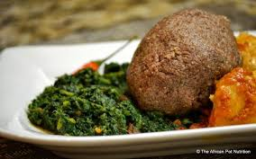

Kasi Sorgum Pap and Vegetables dish.

This is our Kasi Sorgum Pap and stir fried vegetables, enjoy it with some steak for
a filling meal.
Ingredients of our Sorgum Pap and Stir fried Vegetables dish.
- Mabele grains
- Water
- Natural rock salt
- A mix of vegetables
Preparation steps of our dish.
- Mix your grains with boiling water in a stove, at high temp.
- Cooking till all the water evaporates, and becomes pap like.
- Cook it for about 15 - 20 min, then it is ready.
- Pour all your veges in a pan with a hot coconut oil.
- Stir fry them till you reach your desired preference.
- Add your prefered spices, for about 15 - 20 min and enjoy.